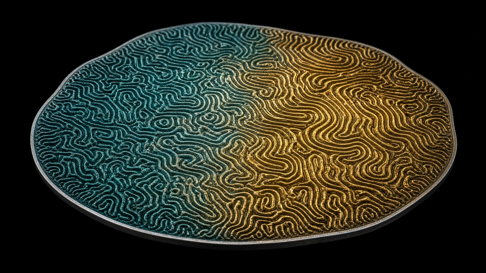
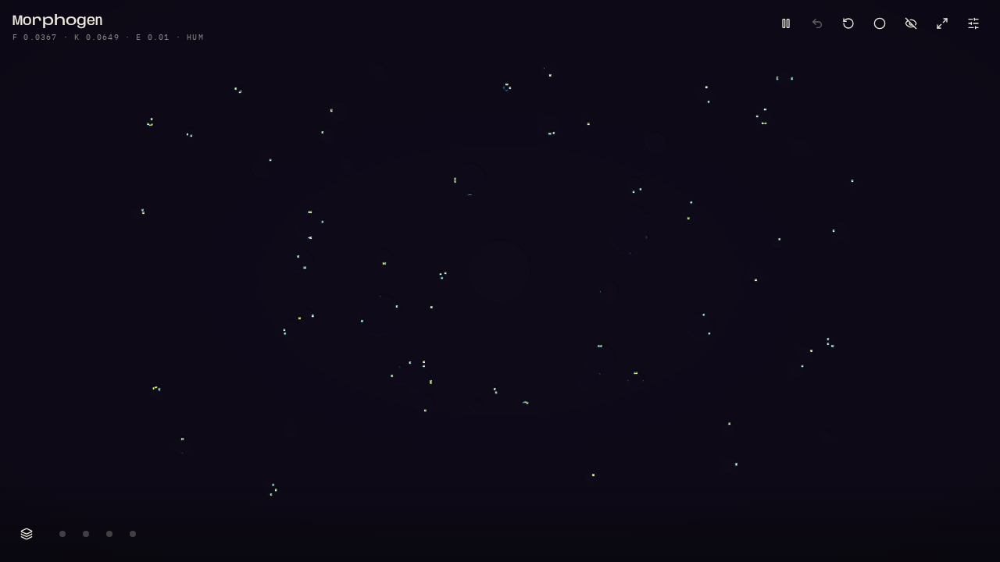
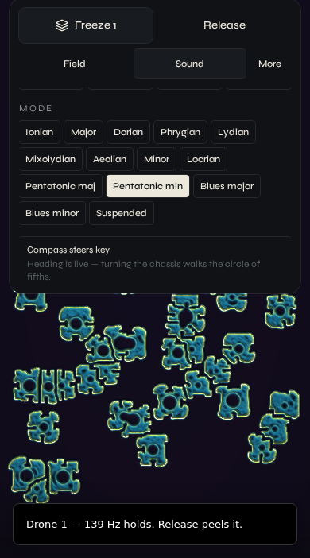
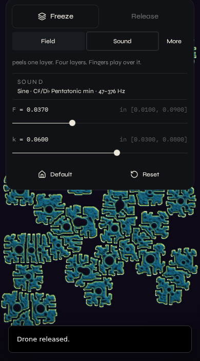
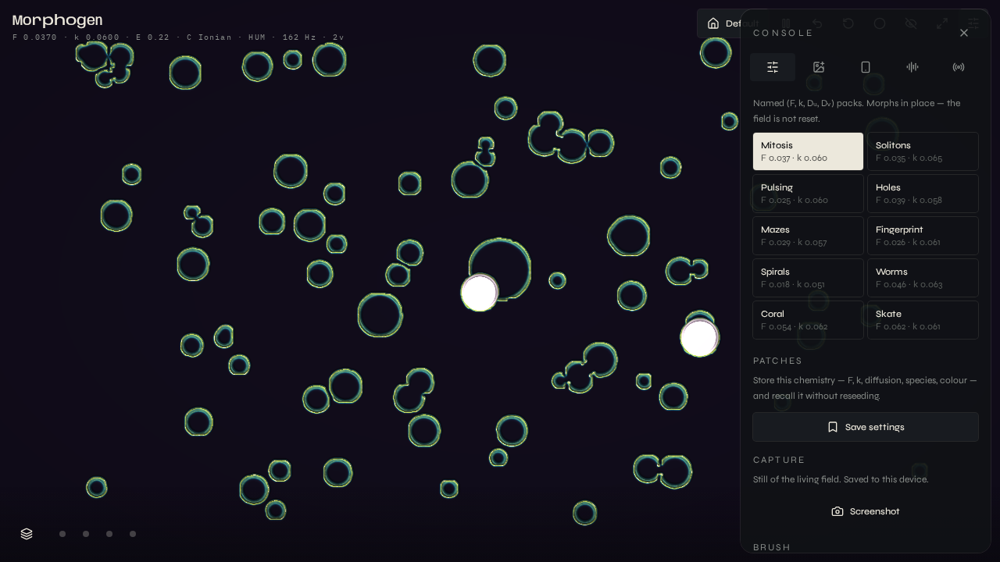

Earth cavity · 7.83 Hz
A theremin made of chemistry.
Gray–Scott reaction-diffusion as a playable instrument. Fingers, chassis, and field. The Hum is always on.
Instrument guide · v0.1 · 18 September 2026
00
A living chemical field. How you hold the phone is the other antenna.
Morphogen is not a drawing app, and it is not a DAW. It is an instrument: Pearson Gray–Scott on a 4K-class GPU, The Hum as a Schumann sine pad, and a polyphonic theremin you play with fingers, tilt, and compass.
This booklet is the current instrument — what it is, how to play it tonight, and the chapter after: Ableton, Serum, Resolume Arena, and Synesthesia as GLSL.

Gray–Scott maze / fingerprint ridge — the vis is the chemistry
01
Two species, u and v, diffuse and react on the glass. You do not draw on them. You inoculate, hold, and listen.
The rest state is The Hum — Earth-ionosphere cavity modes at 7.83 Hz and their audible octaves, as a sine pad. Default waveform is sinusoidal. Default chemistry is Pearson mitosis. Default key is C Ionian, 47–376 Hz.
Height of the glass is pitch. Across is amplitude. Roll pans. Each finger is a voice, snapped to the current key and mode. The compass can walk that key around the circle of fifths.
Freeze holds the last pitch as a quiet drone you play over. Release peels a layer. Four layers. It is not a noise gate.
Fingers leave no marks, ripples, or halos. A contact seeds a modest disk of species v — VisualPDE initial conditions, not paint. Species packs morph feed, kill, and diffusion in place; they do not reseed the field.
On a laptop the pointer is an audio-only antenna — no click required to play. Click or drag to inoculate. On a phone, two or more contacts play at once. Motion permission is asked on Enter; after that, the chassis is live.
Projectors follow through TouchDesigner (JSON at 20 Hz) or MIDI CC 20–29. The field is already a stage instrument.

The instrument, entered — mitosis field, The Hum, C Ionian
02
Five systems, one glass. Nothing here is a mock.
WebGL2 Gray–Scott, 9-point isotropic Laplacian (Karl Sims weights), aspect-correct sim FBO, 8-bit RGBA nearest in the solver and linear on display. Adaptive 4K-class resolution. Twenty Euler steps every animation frame so the pattern lives. Scientific four-stop colormap of v with hillshade from ∇v. Default Pearson mitosis: F 0.037 · k 0.060 · Du 0.21 · Dv 0.105.
Always-on Schumann sine pad. Polyphonic theremin: one live voice per finger. Y is pitch, quantized to key and mode inside a Hz window. X is amplitude. Roll pans. Pressure opens harmonic. Waveforms — sine, triangle, saw, square, pulse, spectrum — are architecturally distinct (mix, filter, FM, detune). Live voices bypass the Hum tilt filter so saw and square cut through.
Absolute pose for audio: holding the phone is the instrument. Rest-relative gyro for visual advection, so tilt does not streak colonies. Compass heading walks the circle of fifths with hysteresis. Microphone can frequency-modulate the lead and inoculate the field. Optional camera as a living photograph.
Freeze: last pitch as a quiet drone, field generation as overlay. Four layers, FIFO. Release peels; Release all clears. Recorded sample layers (up to six) loop and overdub from Sound. Undo is eight deep across chemistry, waveform, key, and locks. Field patches store F / k / Du / Dv / species / colour. Screenshots capture the living pattern.
TouchDesigner WebSocket client, JSON at 20 Hz: params, sensors, audio, field stats, optional 16×16 grid. Callbacks ship in public/td/morphogen_ws_callbacks.py. MIDI CCs 20–29 as an alternative. Chrome hides; the field remains. Identity is Morphogen — never the host slug.
Stack · TanStack Start · React 19 · WebGL2 · Web Audio · zustand. Playable in any modern browser with WebGL2. iPhone and iPad via Safari or Chrome, motion on first Enter. Source: github.com/IAmM3ta/morphogen
03
Enter. First gesture unlocks audio and motion. Grant the phone its sensors. The Hum starts.
Listen. Do nothing. The field is already living. Mitosis divides. The cavity tone is the rest.
Play the glass. Height is pitch, across is amplitude. Each finger is a voice. On a laptop, move the pointer — no click required.
Hold the chassis. Tilt brightens The Hum. Roll pans. Spin is tremolo. Turn the body and, with compass on, the key walks the fifths.
Inoculate. Click or drag to seed a disk of v. Not a mark. Chemistry takes it from there.
Freeze a generation. Freeze holds the last pitch as a drone. Play over it. Release peels one layer. Four layers. Release all clears.
Choose a room. Sound face: waveform, key (C♯ is there), mode (Aeolian, pentatonic, blues), Hz window. Field face: F, k, Default.
Come home. Default restores mitosis, The Hum, C Ionian, 47–376 Hz, and clears drones and loops. If you get lost in the noise, that is the way back.
The glass is an XY antenna. Pan is roll, not left/right.
Open Morphogen. Tap Enter. Allow motion. The card sits under the wordmark — Sound is the face you land on. Play the lower field. Freeze is labeled. If Safari still shows an unlabeled layers glyph, hard-refresh once.
Fingers do not paint. Freeze is not white noise. Species changes do not reset the dish. Default is always there if the room gets away from you.
04
Three controls, two faces, one console.

Sound — waveform, 47–376 Hz, C♯ / D♭, pentatonic min

Field — Freeze / Release, F, k, Default
Full-width, labeled. Freeze holds the last pitch (or the tonic, if no finger is down). Release peels. Release all clears the stack. HUD reads DRONE N.
Sound is the default face: sine, key, mode, range. Field is F and k, plus a chip of the current room that jumps back to Sound.
Opens the Console. Tabs are labeled: Field, Image, Body, Sound, Sync. Close returns to the card. On a laptop the card sits bottom-right.
05
The Field console follows VisualPDE Parameters. Touch a coefficient to bind its slider.
| Symbol | Name | Meaning | Factory |
|---|---|---|---|
| F | Feed | Supply of species u | 0.0370 |
| k | Kill | Removal of species v | 0.0600 |
| Dᵤ | Diffusion U | How fast u spreads | 0.210 |
| Dᵥ | Diffusion V | How fast v spreads | 0.105 |
| R | Radius | Inoculum disk, not a brush | 0.032 |
| B | Value | Seed of v = 1, u = ½ | 1.00 |
| N | Steps / frame | Euler steps every animation frame | 20 |
| Δt | Timestep | Integration speed | 1.00 |
| L | Lighting | Hillshade from ∇v | 1.00 |
Named (F, k, Du, Dv) packs. Morph in place — the field is not reset. Keys 1–9 on a laptop.
| Pack | F | k | Character |
|---|---|---|---|
| Mitosis | 0.037 | 0.060 | Soft dividing cells — factory rest |
| Solitons | 0.035 | 0.065 | Quiet stable spots |
| Pulsing | 0.025 | 0.060 | Breathing spots |
| Holes | 0.039 | 0.058 | Perforated sheet |
| Mazes | 0.029 | 0.057 | Labyrinth walls |
| Fingerprint | 0.026 | 0.061 | Ridge fields |
| Spirals | 0.018 | 0.051 | Rotating arms |
| Worms | 0.046 | 0.063 | Wandering filaments |
| Coral | 0.055 | 0.062 | Branching reefs |
| Skate | 0.062 | 0.061 | U-skate world |
06
Sine is the rest. Everything else is a room you choose.
| Name | Tag | |
|---|---|---|
| Sine | HUM | Pure cavity tone — factory default, The Hum |
| Triangle | TRI | Soft odd harmonics |
| Saw | SAW | Bright full ramp |
| Square | SQR | Hollow odd series |
| Pulse | PLS | Narrow nasal duty |
| Spectrum | SPEC | The living field as harmonic partials |
Clockwise from C. Compass 0° = C. C♯ sits on D♭.
Church modes, then the useful extras. Live pitch snaps to the scale.
Factory window is 47–376 Hz. Lo opens to 27.5. Hi opens to 2093. Height of the glass maps onto this window, then snaps to the scale.
Freeze is a drone of the last pitch, or the tonic if you have not played. Sine, inside the window, no noise bed, no delay wash, no interval stacking. Further motion grows the field off the frozen generation; it does not transpose the instrument out of the room.
From Console → Sound, record a looping sample. Stack overdubs. Play, loop, or remove each layer. The Hum is not recorded into them — only lead and loops — so the cavity tone stays the floor.
“Compass steers key” walks the circle of fifths as you turn. Eighteen degrees of hysteresis so the room does not chatter. On a laptop there is no heading; leave it off.
07
Pitch axis of the phone. Brightens The Hum; opens live filter. Absolute pose — a stable hold is a note, not a dead rest.
Pans the Hum and the voices. Also a slow beat in the delay. Left/right on the glass is amplitude, not pan.
Spin is tremolo on the cavity. A flick of g-force lifts the pad. The field’s advection is rest-relative, so the colonies do not streak.
Optional. Heading maps onto the circle of fifths. North is C. Turn the chassis, the key walks.
Voice and room tone frequency-modulate the lead and inoculate the field. Optional. Echo cancellation on.
A living photograph as a second species map. Same four image modes as a still.
| Mode | |
|---|---|
| Inoculate | Bright regions seed growth of v |
| Develop | The picture emerges through the reaction |
| Resist | Dark areas become walls |
| Palette only | Sample colour from the photograph; chemistry unchanged |
Console → Sync. Run a WebSocket DAT as a server. Connect Morphogen as the client. Packets are JSON at 20 Hz: params, sensors, audio, field stats, optional 16×16 grid of v. Callbacks live beside the app (public/td/morphogen_ws_callbacks.py). Create Table DATs named morphogen_json and morphogen_grid. If the page is served over HTTPS, expose the socket as WSS.
CCs 20–29 as a parallel path into a MIDI In CHOP or any DAW. This is the seed of the Ableton chapter — control change today, per-finger notes next.

In play — the field is the score
08
| Key | Action |
|---|---|
| 1–9 | Morph to a species pack |
| L | Freeze drone |
| Z | Release last drone |
| Shift+Z | Clear all drones |
| U / ⌘Z | Undo |
| R | Reset field (reseed) |
| Shift+R | Default settings |
| C | Record / stop session |
| Space | Pause / resume the solver |
| H | Hide chrome |
| F | Fullscreen |
| Esc | Close console, show chrome |
| Species | Mitosis |
| F · k | 0.0370 · 0.0600 |
| Du · Dv | 0.210 · 0.105 |
| Colour | Field (teal → gold) + hillshade |
| Waveform | Sine — The Hum |
| Key · mode | C Ionian |
| Range | 47–376 Hz |
| N · Δt | 20 · 1.00 |
| Drones · loops | Cleared |
Reset reseeds the chemistry. The room (key, waveform, F, k) stays. Default restores the factory room and clears drones and recorded layers. Use Default if you get lost. Use Reset if the colonies have eaten the dish and you want a new inoculum.
Eight deep. Chemistry, waveform, key, mode, range, and freeze count. GPU field snapshots come along, so a paint can be taken back.
| Tab | |
|---|---|
| Field | Equation, F / k / Du / Dv, species, patches, screenshots, brush, time, views, Freeze, Default, Record |
| Image | Photographs, camera, inoculate / develop / resist / palette, mix |
| Body | Tilt & motion, microphone, the chassis as antenna |
| Sound | Default, Hum, level, mute, waveforms, key, mode, range, compass, loop rack |
| Sync | TouchDesigner WebSocket, 16×16 grid, MIDI device |
09
The instrument plays. The studio and the room come after.
Today: MIDI CC 20–29. Next: each live finger emits a note-on in the current key and mode, velocity from amplitude, optional pitch-bend from the microtonal remainder. A Max for Live device receives the existing 20 Hz JSON (or OSC) and maps F, k, energy, edge, and Hum level onto racks. Transport follow is later. Morphogen does not become a DAW; Ableton remains the DAW, Morphogen remains the instrument.
Spectrum mode already reads species v as harmonic partials. Next is a dump: one scan of the field as a 2048×256 wavetable WAV that Serum can load. The chemistry becomes the oscillator. An LFO / curve export of energy and edge is the smaller sibling of the same idea.
NDI or Spout / Syphon of the 4K display FBO, so the living pattern is a clip in a VJ set. OSC for clip and effect params. A longer path: the display shader (scientific colormap + hillshade) as ISF / FFGL, so Resolume can light the same chemistry without a browser in the chain.
The solver and the colormap packaged as Synesthesia scenes. Uniforms for F, k, Du, Dv, energy, edge, and audio-reactive inoculum. Same Pearson equations, different host. The instrument’s vis becomes a scene other artists can play inside Synesthesia’s engine.
TouchDesigner is already the projection path. Next is a dedicated stage face: chrome gone, 16:9 or 9:16 clean field, optional grid, optional NDI. Hide is a keystroke today; stage mode will be a mode.
None of this is in the current build. The current build is the instrument you play with hands and chassis. The chapter after is how that instrument sits in a studio and on a wall.
10 · Colophon
Pearson Gray–Scott after Pearson, 1993. Laplacian after Karl Sims. Field console after VisualPDE. The Hum after Schumann, 7.83 Hz. Played, not drawn.
v0.1 · 18 September 2026
github.com/IAmM3ta/morphogen
TanStack Start · React 19 · WebGL2 · Web Audio
Anybody · Syne · IBM Plex Mono
Void #07080a · Ivory #ece8dc
The field is the score.